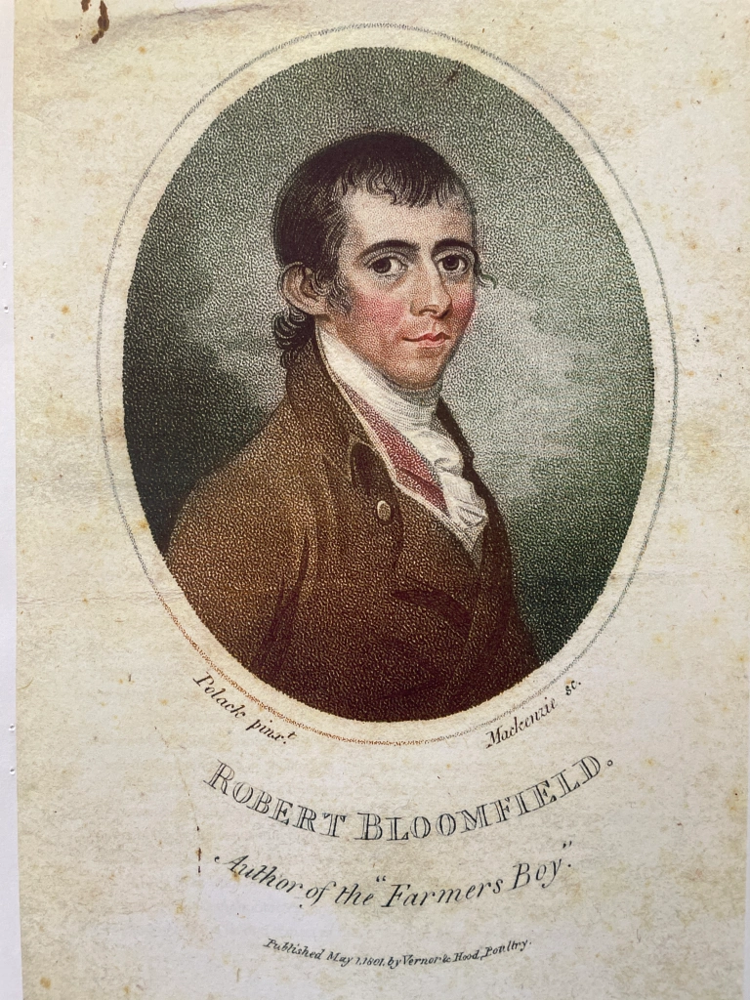

Robert Bloomfield Depicted: a Portrait Engraving after a Design by Solomon Polack
On 5 October 1800 Robert wrote to his brother George as follows:
Sunday Night, October 5 Dear George,
One of the enclosed papers is a discontinued journal, it may contain some information. The other paper your good sence will teach you to Burn. My portrait was taken some time ago by a miniature painter named Polack the painting was about five inches high; the engraving will be publishd next month. I don’t like the painting much. the print is published by subscription, for the benefit I believe of the engraver and the brother-in-law of Hood who employs him.
Bloomfield refers to the miniature painter Solomon Polack (c.1757-c.1839), who worked in London, exhibiting at the Royal Academy, after immigrating from Holland. The picture was engraved by Brown and published, 1800, by Vernor and Hood.

The portrait is owned by Bruce Graver and I am grateful for his permission to reproduce it.